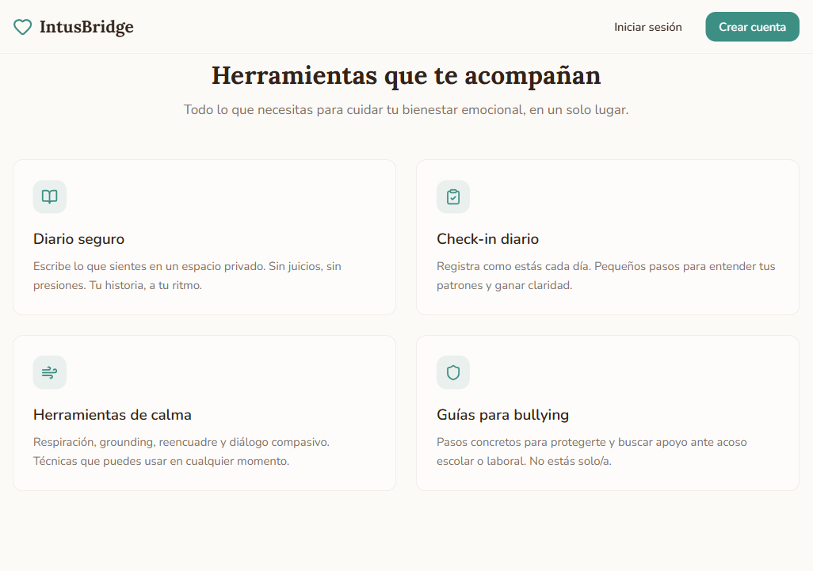
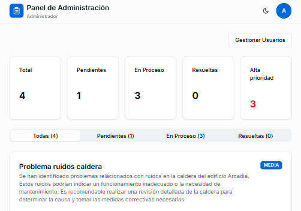
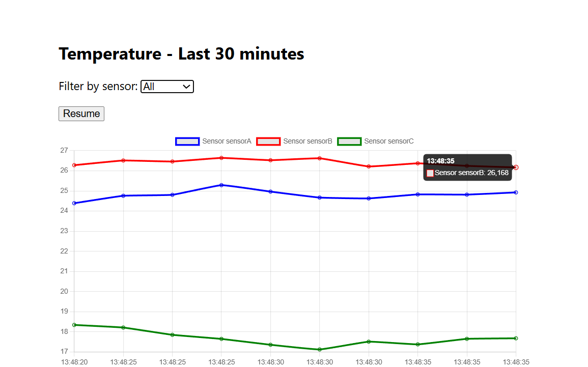
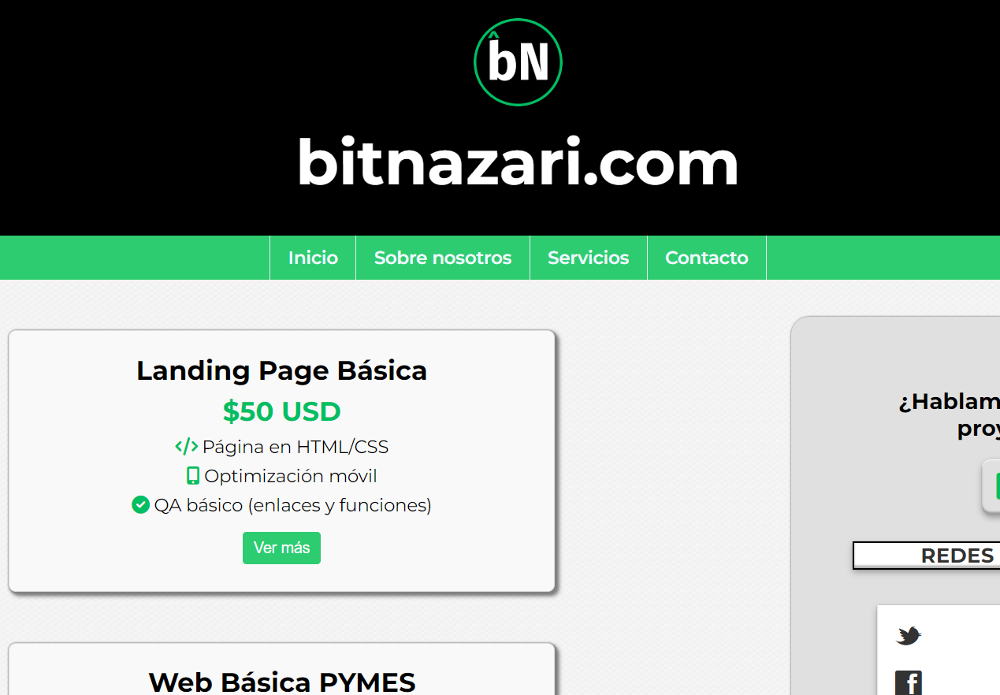
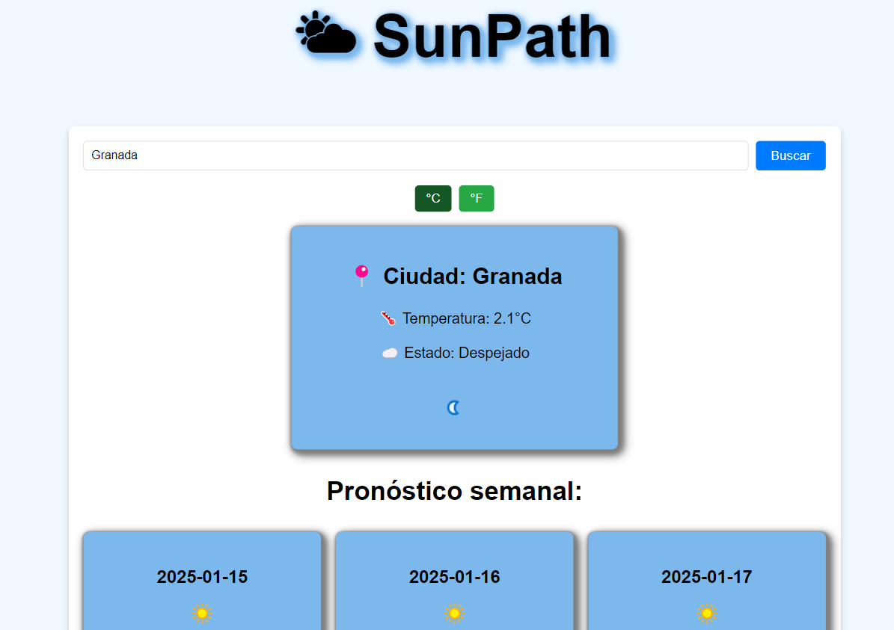
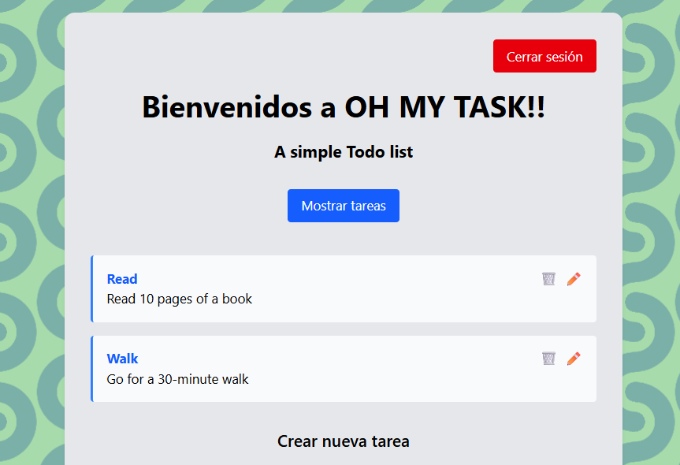

Desarrollador Web






¡Hola! Soy Cristian, Desarrollador Web Junior apasionado por transformar ideas en realidades digitales. Tras varios años construyendo experiencias en el sector de la hostelería, decidí reinventarme profesionalmente y dar el salto al mundo del desarrollo web. Hoy combino mi capacidad de adaptación, creatividad y compromiso con tecnologías modernas para construir soluciones web funcionales, escalables y orientadas a usuario. Te invito a explorar mi portfolio y conocer mi trabajo.
A través del CFGS de Desarrollo de Aplicaciones Web (DAW), formación especializada y proyectos reales en producción, he desarrollado un enfoque sólido en desarrollo fullstack. Recientemente he finalizado el Máster de Desarrollo con Inteligencia Artificial de Brais Moure y BIG School, integrando IA en aplicaciones web para mejorar la experiencia de usuario y automatizar procesos. Mi experiencia previa en otros sectores me aporta una visión práctica, analítica y orientada a la calidad.
Manejo de HTML5, CSS3 y
JavaScript para construir interfaces web modernas,
responsivas y orientadas a la experiencia del usuario. Experiencia en el
desarrollo de interfaces con React, aplicando
Hooks para el manejo de estado y lógica de componentes, así
como el consumo de APIs REST mediante
Fetch API.
Conocimientos en frameworks de estilos como Tailwind CSS y
Bootstrap para agilizar el diseño, logrando interfaces
limpias, adaptables y visualmente atractivas en distintos dispositivos.
Además, implementación de validaciones de formularios y
manejo de errores para mejorar la interacción del usuario.
Sólida experiencia en la integración de bases de datos como
PostgreSQL, SQL Server, MySQL, utilizando
Entity Framework Core (Code First) para el mapeo y gestión de
datos, así como despliegue en entornos cloud como Railway.
Conocimientos avanzados en C# (.NET) para el desarrollo de
APIs RESTful escalables y seguras, aplicando una
arquitectura en capas (Controllers, Services, Repositories),
validaciones robustas y autenticación mediante
JWT con hashing HMACSHA512.
Familiaridad con Node.js como entorno de ejecución para
backend, y experiencia práctica en la construcción de
sistemas CRUD funcionales y protegidos, siguiendo buenas
prácticas de desarrollo seguro y mantenible.
Diseño, personalización y optimización de sitios web en WordPress, incluyendo configuración de plugins, edición de temas y mejora de SEO.
Uso de Git y GitHub para gestionar proyectos de manera eficiente y colaborativa.
Experiencia en pruebas manuales para garantizar la funcionalidad, usabilidad y experiencia del usuario en aplicaciones web.